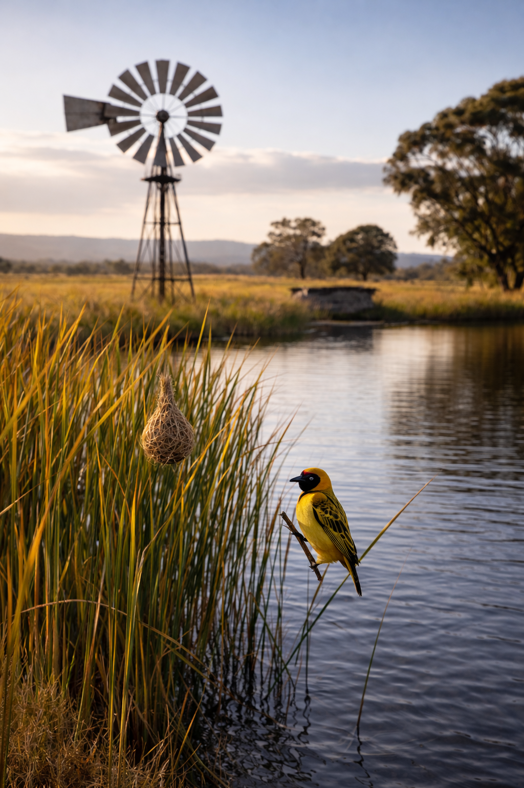

as ‘n ballon die aarde se atmosfeer kon omvat
dan sou my asem alleen dit beswaarlik laat dy
maar ons asem saam, in ritmiese maat
sal beslis tot 'n rimpeling lei —
soos 'n klippie in die dam op 'n lui somerdag
waar 'n windpomp deur met alle krag
en knaend steun, byna of hy neul
vry te kom van sy rem wat die wind beteul
wyl die kring van ons asems diffusieer in die riet
waar vinke flytig nessies vleg en met skrille lied
die wind tartend daag om die windpomp te draai
en hul arbeid te toets wat aan die wilgertakke swaai
maar as ons asem saam wat meer reëlmaat 'n rimpel maak
en die wind aanhuts om gou te ontwaak
die nessies te wieg en die rem te verslap
met dreunsang van "OM" die windpomp laat klap
en met ons asems saam 'n ritme hou
in die ballon wat onse aarde omvou
Om Mani Padme Hum